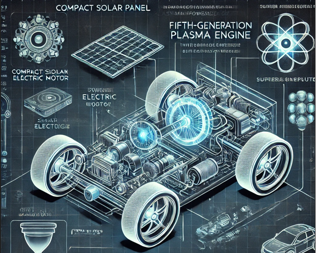

(Pulse Drift 4x4: el coche del año 2150)

Tecnología en Desarrollo:
Los motores de plasma son prometedores en aplicaciones espaciales debido a su capacidad para proporcionar una aceleración constante durante largos periodos de tiempo. Sin embargo, para su uso en vehículos terrestres, es necesario un avance significativo en la tecnología de generación de plasma, fuentes de energía compactas y sistemas de control de temperatura y presión. Actualmente, esta tecnología está en fases experimentales.
Se espera que para el año 2150 los motores de plasma sustituyan por completo a los vehículos eléctricos o de hidrógeno, revolucionando la movilidad con una eficiencia energética sin precedentes.
Últimos avances y links en motores de plasma
- Plasma Motors: The Propulsion of Plasma
- Avances del plasma para satélites
- Avances en motores de plasma para aviones
El cuarto estado de la materia y su aplicación
El plasma, el cuarto estado de la materia, se produce cuando los gases se ionizan y sus átomos se separan en electrones y iones cargados. Este estado tiene una gran cantidad de energía que puede ser utilizada en motores de plasma para generar propulsión eficiente. Su aplicación en la ingeniería automotriz podría ser un cambio radical en la movilidad del futuro.
Innovaciones del motor de 5ª generación
El motor de plasma de quinta generación funciona con un sistema altamente eficiente que integra varias tecnologías avanzadas:

Un pequeño motor eléctrico que se activa con una placa solar compacta, eliminando la necesidad de baterías convencionales. Este motor eléctrico inicial suministra la corriente necesaria para encender el motor de plasma, que genera energía de manera continua. Una Super IA cuántica gestiona en tiempo real la estabilidad del plasma, los voltajes y el flujo de energía. Un ordenador cuántico calcula con precisión los estados del plasma para maximizar el rendimiento del sistema. El motor de plasma genera la energía motriz para mover las cuatro ruedas de un sistema 4x4, proporcionando tracción total. El vehículo puede alcanzar una velocidad máxima de 190 km/h en ambas direcciones, gracias a su sistema de propulsión simétrica.